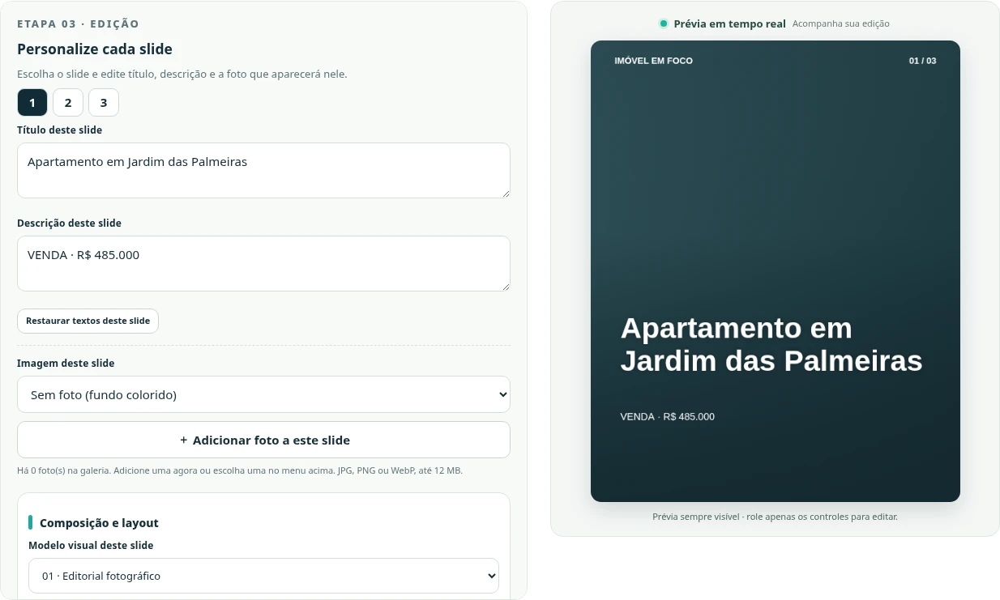
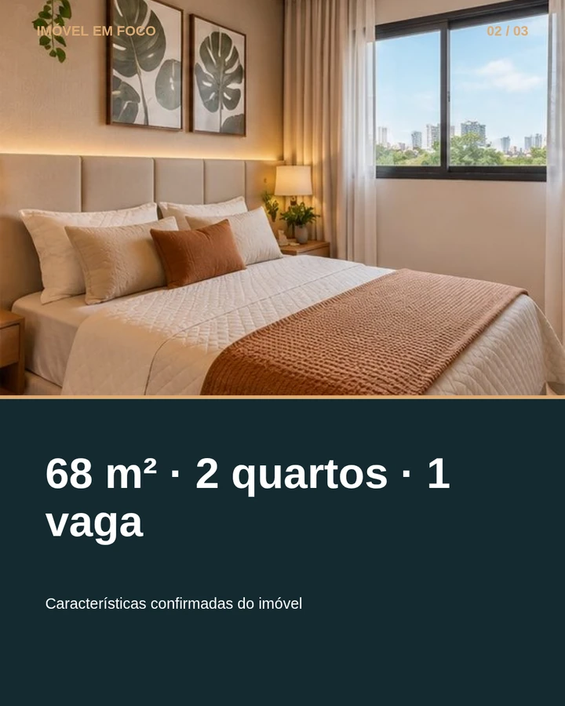
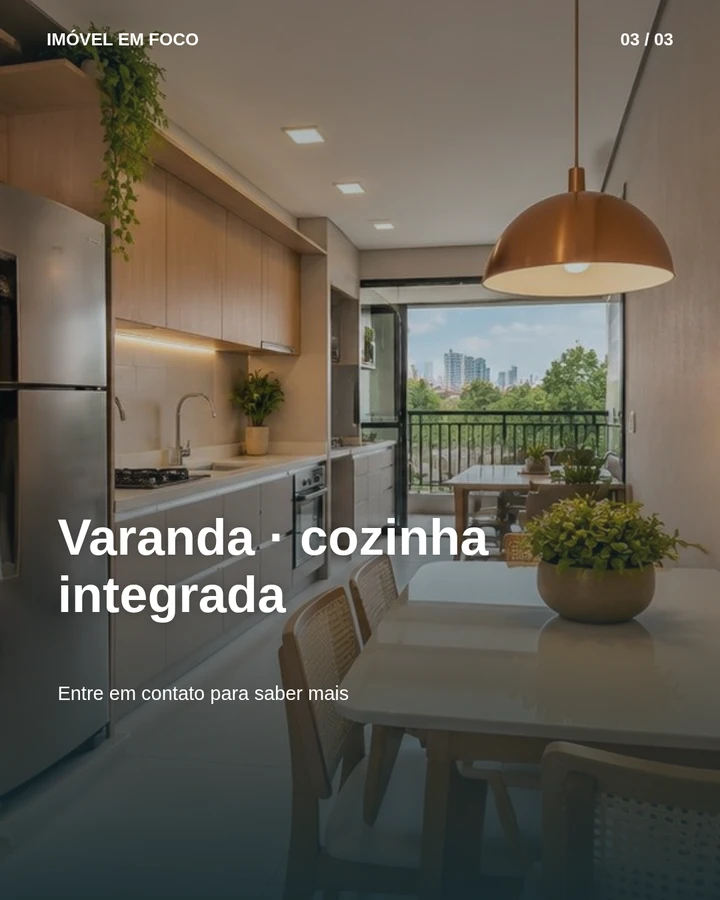

Conteúdo estruturado
Use modelos para apresentar imóveis, dar dicas, divulgar seus serviços ou falar sobre uma região.
Transforme as fotos e informações dos seus imóveis em carrosséis personalizados. Edite, pré-visualize e exporte em um só lugar — sem complicação.

Interface real • dados fictícios para demonstração
Uma experiência pensada para quem precisa divulgar imóveis e criar conteúdo com frequência.
Use modelos para apresentar imóveis, dar dicas, divulgar seus serviços ou falar sobre uma região.
Adicione até 12 fotografias por projeto, escolha fontes, cores e a imagem de cada slide.
Altere título, descrição e composição enquanto acompanha o resultado visual.
Baixe seus slides em PNG, sem marca-d'água, em formatos para feed ou Stories.
Veja três artes produzidas com o editor gratuito, a partir de um imóvel fictício. Substitua os dados, mude o layout e acrescente as suas próprias fotos.
Personalizar meu carrossel →Prévias reais das artes do Free, sem fotografias.


O guia e o tour inicial acompanham você dentro do editor.
Escolha o tipo de conteúdo e preencha as informações do projeto.
Carregue suas imagens e escolha quais aparecem nos slides.
Edite os textos, teste os layouts, ajuste cores e confira a legenda.
Revise as informações, baixe os PNGs e publique na rede de sua escolha.
Experimente a edição Free e, quando quiser ir além, desbloqueie todos os recursos do Studio Pro com uma compra única.
Para criar e conhecer a ferramenta.
Para ampliar suas possibilidades de criação.
*Compra única. A finalização do pedido acontece no checkout da Eduzz; confira as condições apresentadas antes de concluir.
Entenda o que o Studio faz — e o que não faz — antes de criar seu conteúdo.
Não. A versão Free abre diretamente no navegador, sem cadastro.
Não. Você pode baixar os três slides em PNG, um por vez. Confira os dados reais e a identificação profissional exigida antes de publicar.
Esta versão usa modelos de texto e regras programadas. Você fornece as próprias fotografias e pode editar os resultados. Não há geração de imagens ou textos por IA generativa.
O editor processa as fotos e os dados localmente no navegador. A edição Free não salva projetos completos; exporte suas artes antes de fechar a página.
Esses recursos estão previstos na edição Pro. Os vídeos usam os slides e fotografias, sem áudio; o formato de exportação depende do navegador.
A interface é responsiva. Para editar com mais espaço e facilitar a exportação, recomendamos um computador com Chrome ou Edge atualizado.
Abra a edição gratuita, conheça o editor e crie seu primeiro carrossel.